Jestem właścicielem małego gospodarstwa rolnego i posiadam własny las o powierzchni ponad 3 ha.
Rosną w nim m.in.:
dęby,
sosna,
olcha,
brzoza.
Stosując racjonalną gospodarkę leśną i zapisy planu zagospodarowania lasu okresowo pozyskuję drewno, które może być przetworzone na różne zastosowania, m.in. w stolarstwie.
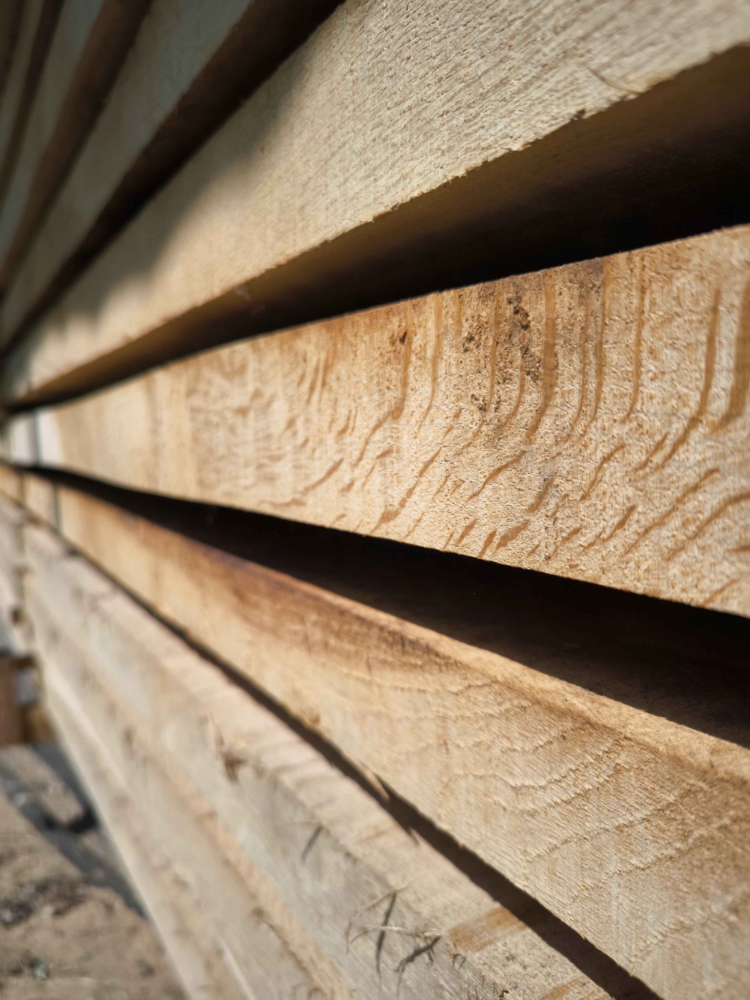
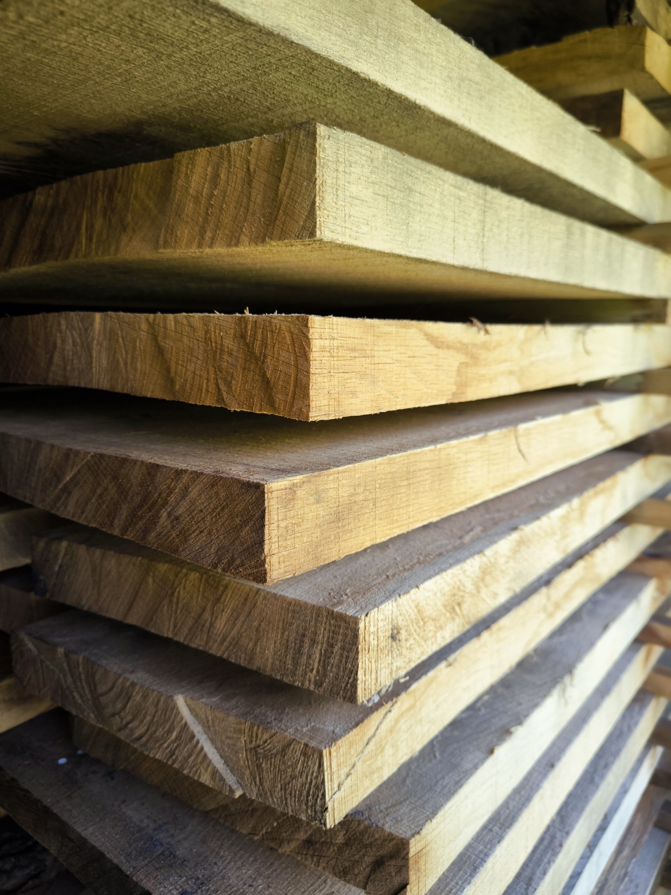
Dąb
Dąb potrzebuje ponad stu lat, aby urosnąć, dlatego drewno jest tak mocne z natury.
Drewno dębowe jest twarde i ciekawe kolorystycznie.
Jest wprost stworzone do produkcji blatów, schodów i podłóg.
Drewno dębowe można rozpoznać po kolorze – od beżowego, złotawego po bladoszary z ciemniejszym, brązowym, przerywanym deseniem słoi.
Ma jednolitą fakturę i wyraźne pory, które podkreślają jego charakter.
Galeria
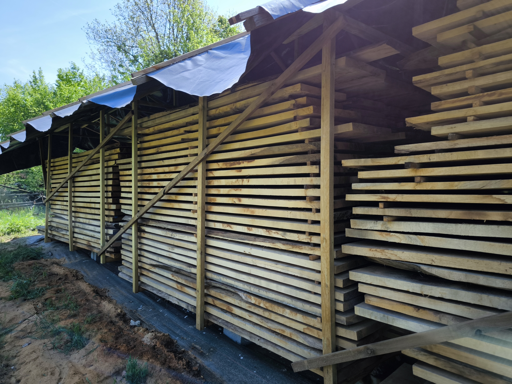
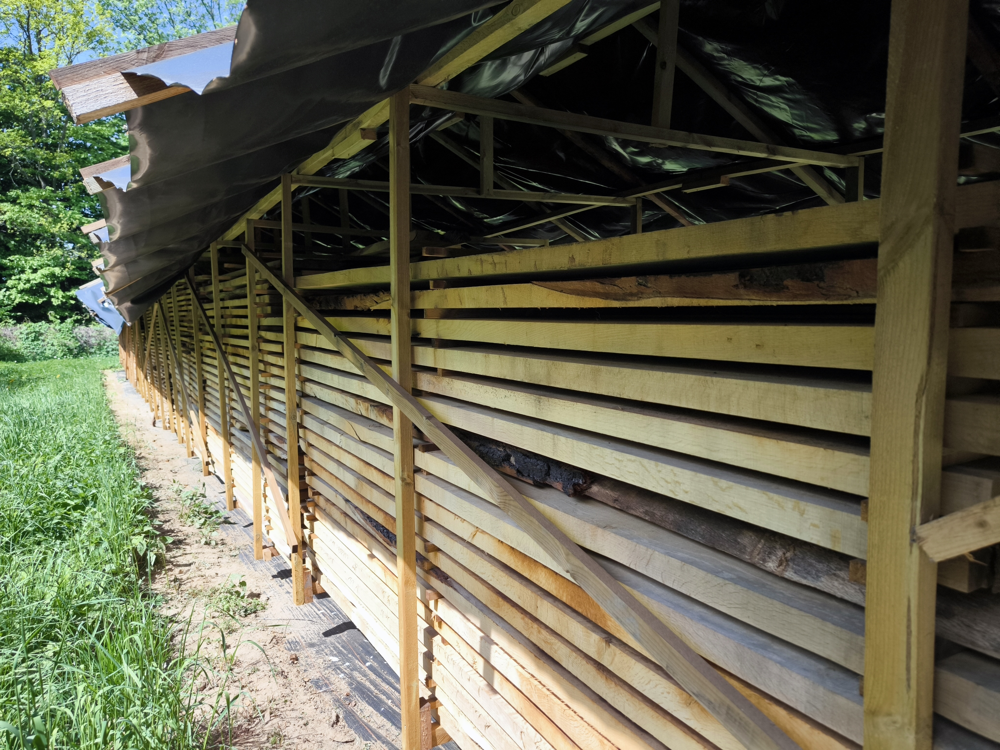
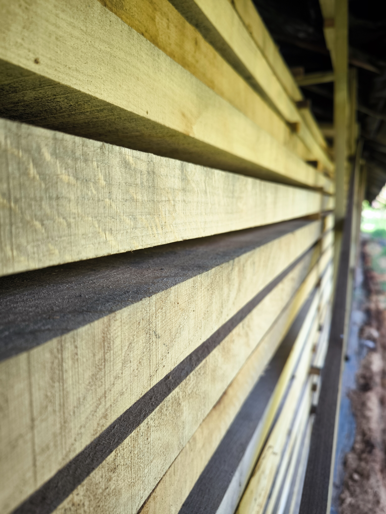
Oferta
Posiadam tarcicę dębową obrzynaną
Grubości: 25 mm, 28 mm, 32 mm, 42 mm i 52 mm.
Szerokość: od 12 do 44 cm
Długość: od 170 cm do 400 cm
Tarcica została pozyskana z drzew pochodzących z mojego lasu na podstawie stosownej decyzji wydanej przez jednostkę administracji państwowej i posiada świadectwo legalności pozyskania drewna.
Cena za m3 do uzgodnienia – zapraszam do kontaktu.
Kontakt
Właściciel: Zygmunt Szmigiel
Adres: Morzęcin Mały ul. Wiśniowa 8, 55-120 Oborniki Śląskie
 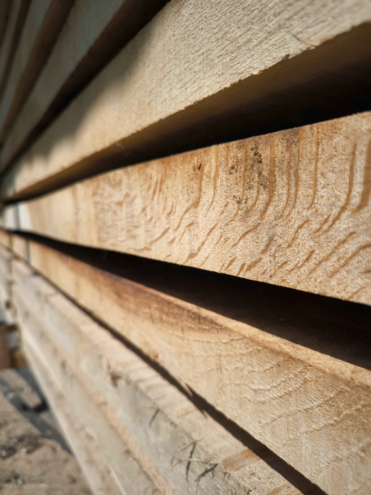
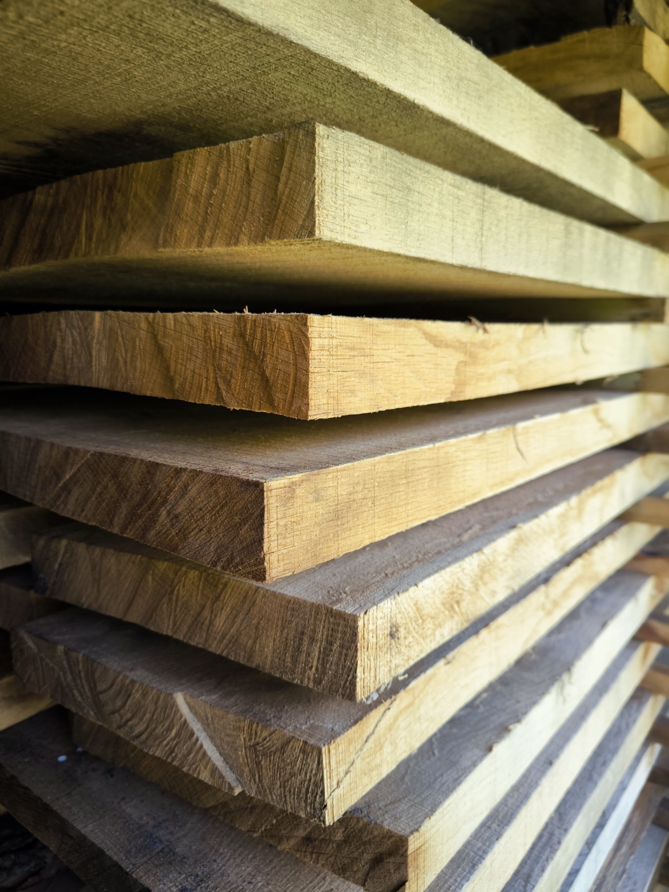
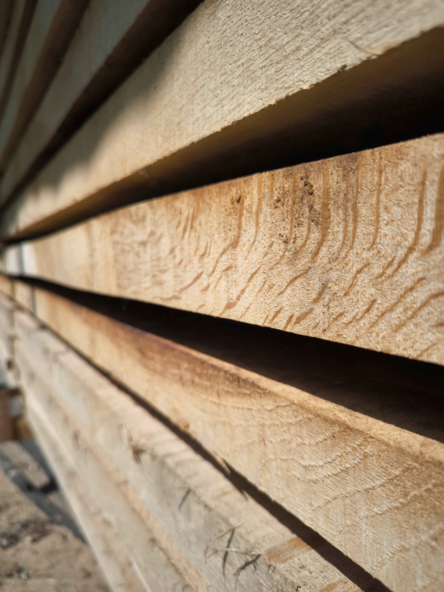
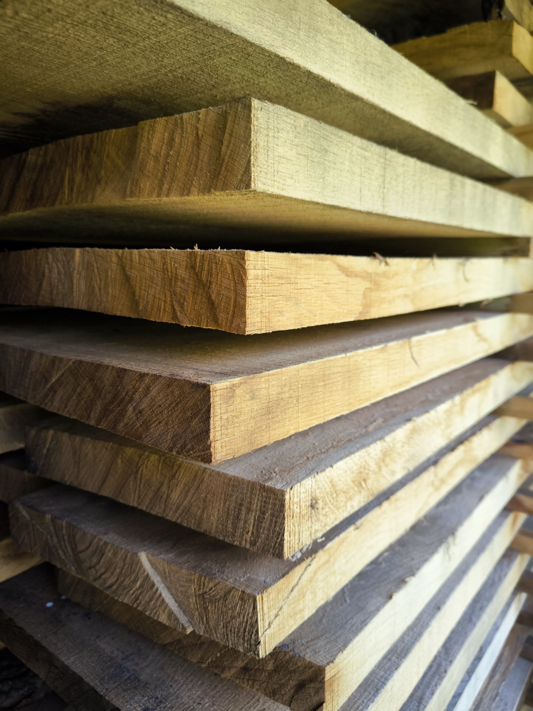
 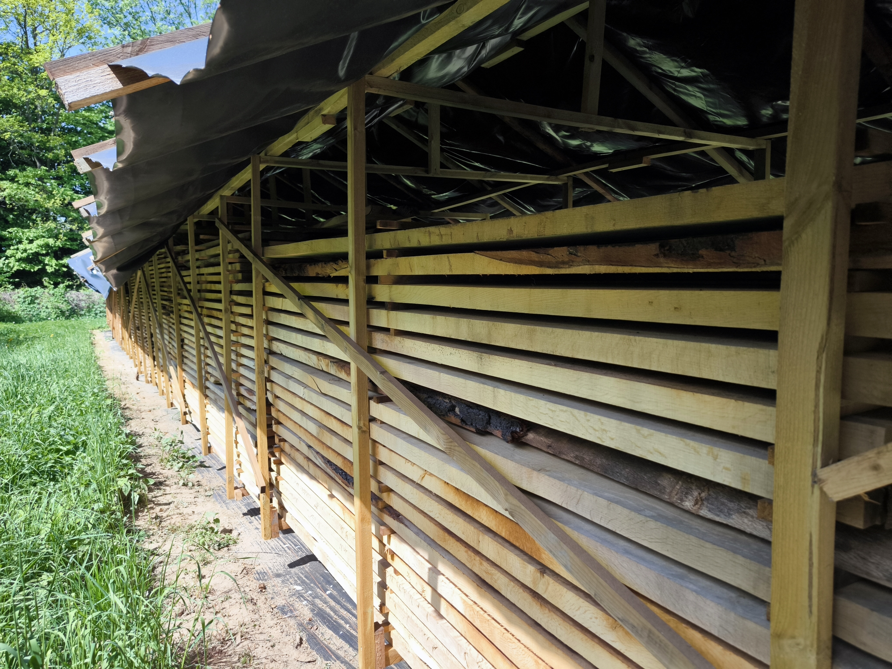
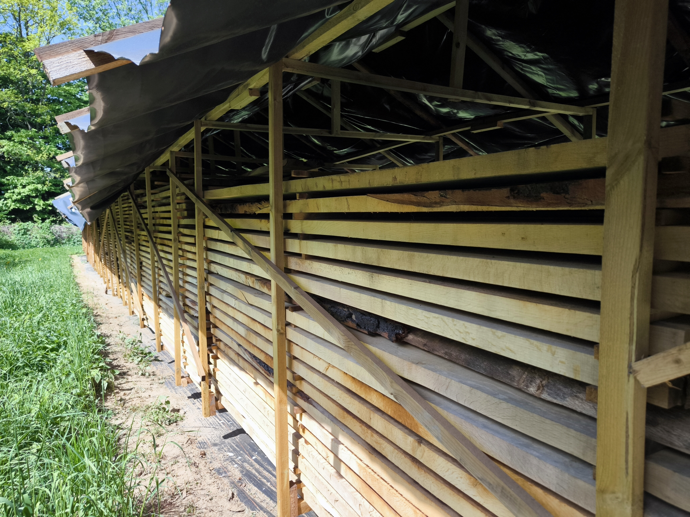
 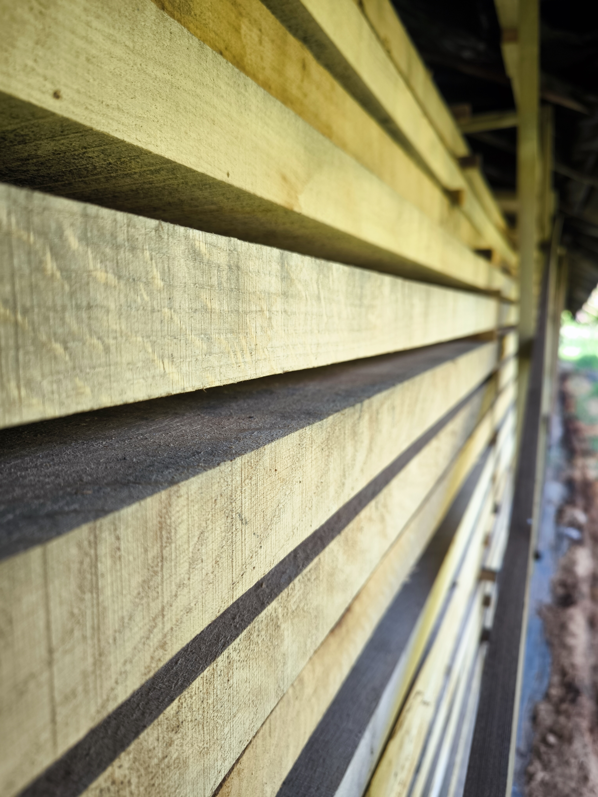
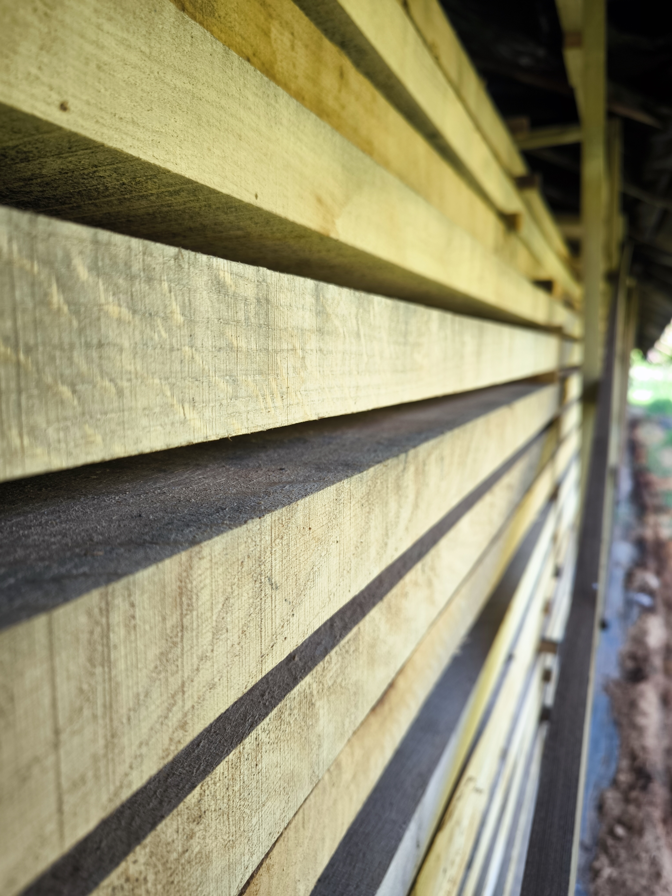